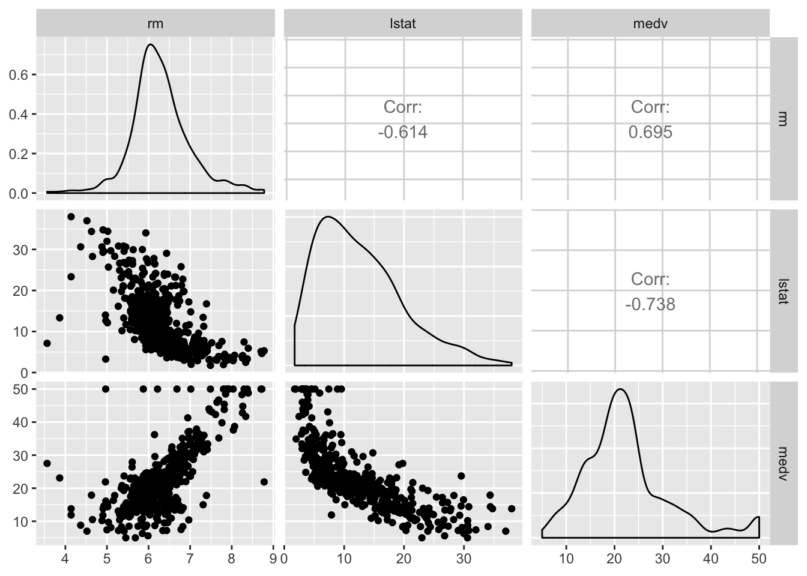
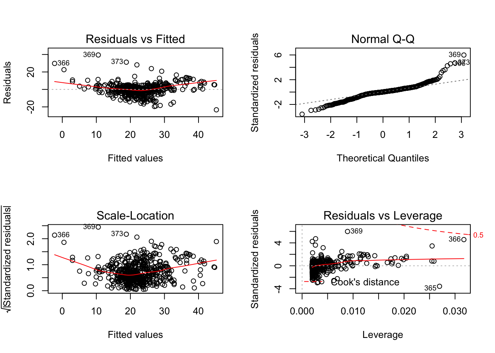
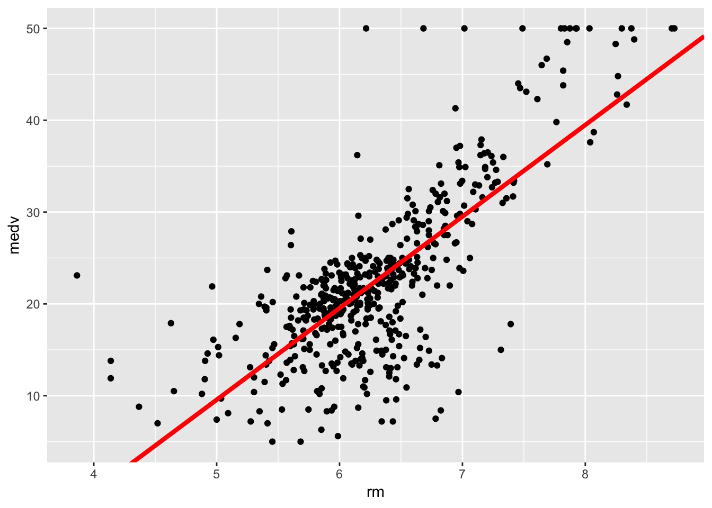
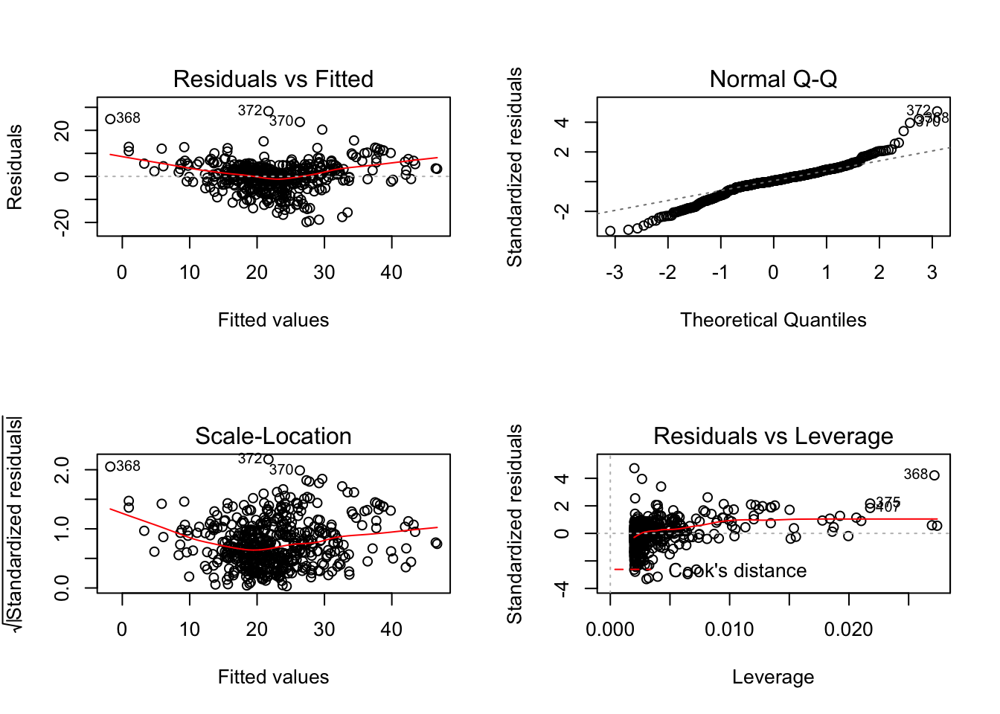
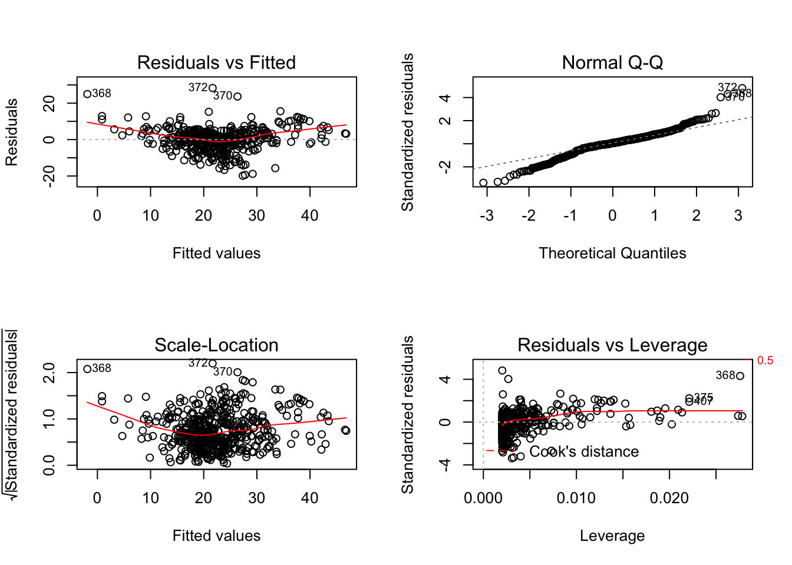
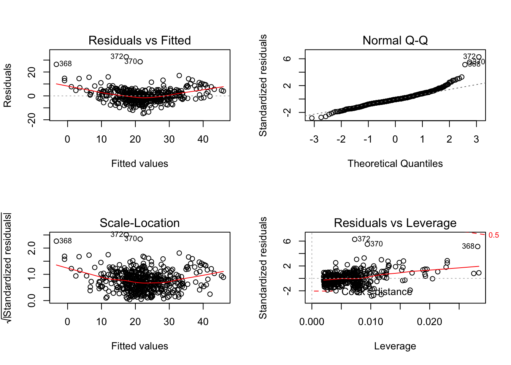
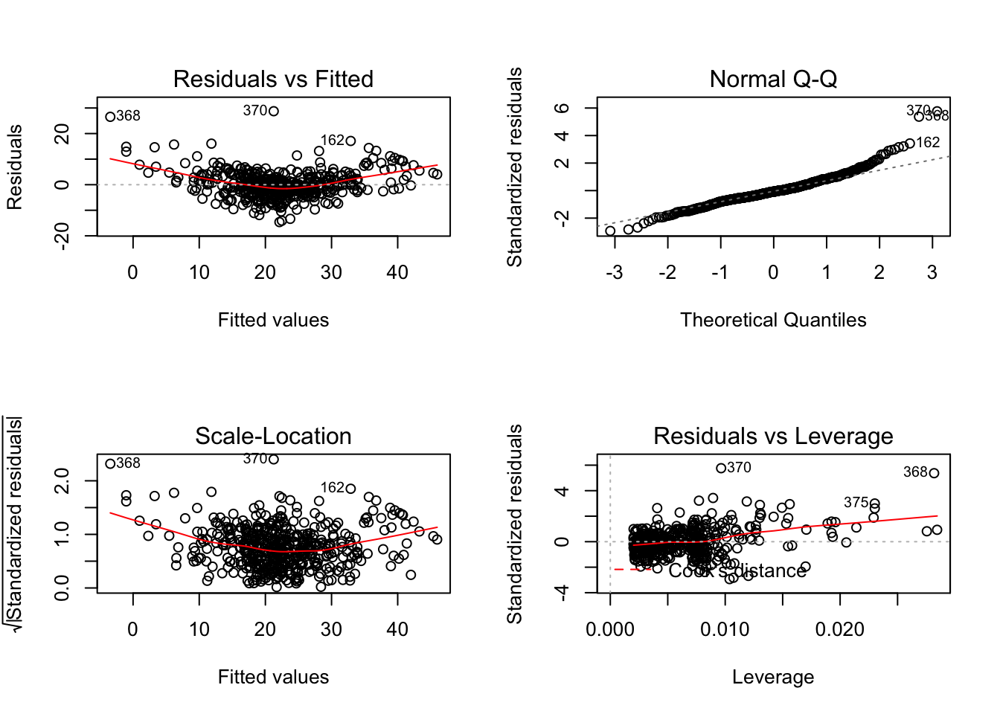
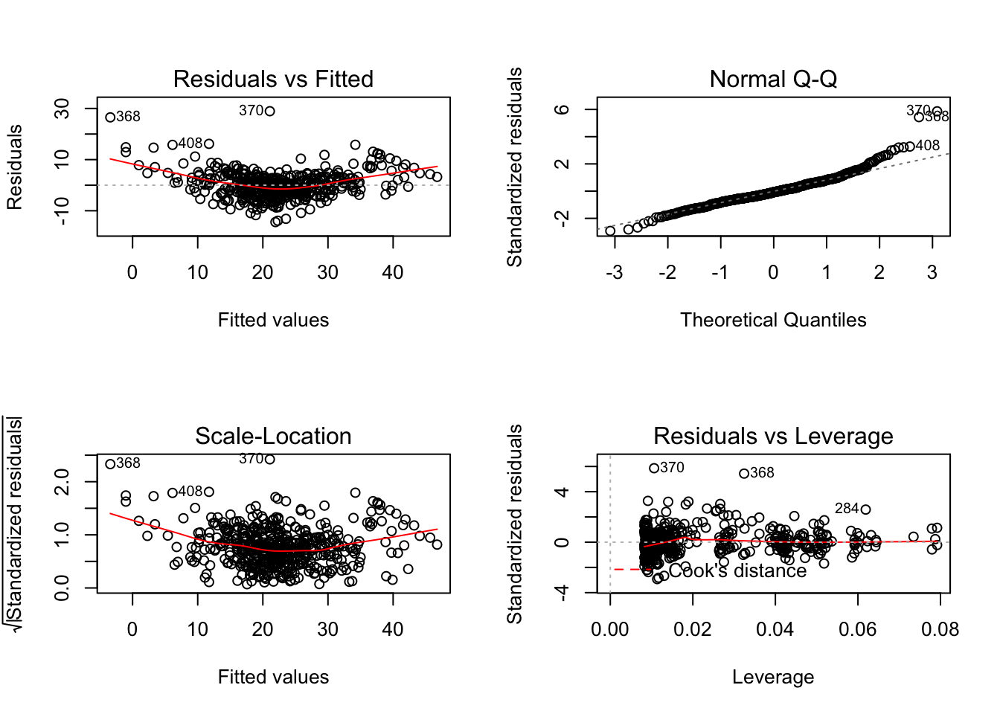
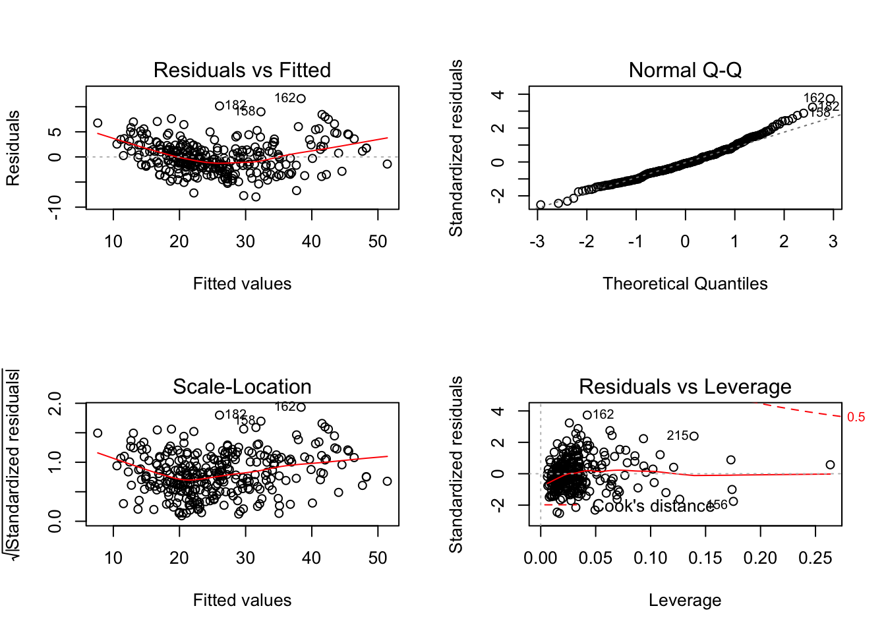
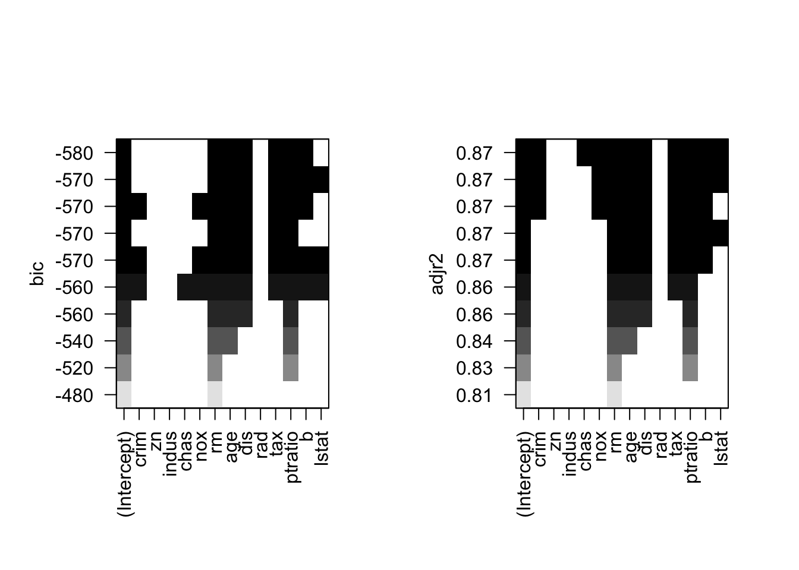

Regression Analysis
Objectives:
The objective of this document is to give a brief introduction to linear regression. This document assumes the users have no prior knowledge of R. After completing this tutorial, you will be able to:
- Model data using simple linear regression
- Model data using multiple linear regression
- Diagnose and evaluate regression models
- Make predictions based on selected model
First, we will cover simple linear regression and then we will proceed to performing multivariate linear regression.
First, we need to set the data into appropriate format:
data <- read.table("http://archive.ics.uci.edu/ml/machine-learning-databases/housing/housing.data",
header = F)
names(data) <- c("crim", "zn", "indus", "chas", "nox", "rm", "age","dis","rad","tax","ptratio","b","lstat","medv")In this dataset, medv is the variable we want to use as the outcome variable and the rest are possible predictors.
To perform accurate linear regression analysis, first you must perform exploratory data analysis. This is the case for every type of statistical analysis, but in this case, variable relations are important for the initial formulation of model.
First we need to take a look at the correlations. Correlations can only be computed using numeric variables, so we change our factor variables back to numeric form.
cor.values <- cor(data)
View(cor.values)Based on the correlation values, we can see that medv has a strong positive correlation with rm variable and a strong negative correlation with lstat.
We might also want to visualize the relationships between variables. To do that, we use scatterplot matrices. Let’s generate a scatterplot matrix using GGally package’s ggpairs function. Of course, we have a lot of variables so visualizing all of them may not be a viable option. So let’s only visualize medv, rm and lstat relationships.
#install.packages("GGally")
require(GGally)
ggpairs(data, columns = c(6, 13, 14))
The plots in the diagonal are the density plots of the variables while other plots are the scatterplots of those variables. Recall that scatterplots were used to visualize the relationship between variables. The upper part of the diagonal shows the correlation between variables.
As you can see, relationship between rm and medv is sufficiently linear looking, while the relationship between lstat and medv is slightly non-linear. This might be due to the effect of other variables or it can simply be the nature of their relationship. To determine which is true, you need to perform further exploratory data analysis which is not in the scope of this tutorial.
Let’s assume we want to model the relationship between medv and rm initially.
Simple Linear Regression
Simple linear regression is the regression in which there is only one predictor variable and one outcome variable. Intercept is not considered a variable since it is a constant.
slr <- lm(medv~rm, data = data)
summary(slr)##
## Call:
## lm(formula = medv ~ rm, data = data)
##
## Residuals:
## Min 1Q Median 3Q Max
## -23.346 -2.547 0.090 2.986 39.433
##
## Coefficients:
## Estimate Std. Error t value Pr(>|t|)
## (Intercept) -34.671 2.650 -13.08 <2e-16 ***
## rm 9.102 0.419 21.72 <2e-16 ***
## ---
## Signif. codes: 0 '***' 0.001 '**' 0.01 '*' 0.05 '.' 0.1 ' ' 1
##
## Residual standard error: 6.616 on 504 degrees of freedom
## Multiple R-squared: 0.4835, Adjusted R-squared: 0.4825
## F-statistic: 471.8 on 1 and 504 DF, p-value: < 2.2e-16require(ggplot2)
qplot(x = rm, y= medv, data = data) + geom_abline(intercept = coef(slr)[1],
slope = coef(slr)[2],
col = "red", size = 1.5)
As you can see from the summary of our model, both the intercept and the coefficient of predictor variable are statistically significant. However, while evaluating the performance of our model, we should also consider the adjusted R^2 to see how much of the variance in the outcome value is explained by our model. It turns out that our model can only explain 48.25% of the variability in the outcome so it is not sufficient.
Also, to evaluate the correctness of our model, we should take a look at the diagnostic plots. Diagnostic plots give us an information about the behavior of residuals. Ideally, after contructing a model, we want our residuals to be randomly and normally distributed with mu$ = 0. In other words, we want our residuals to be independent and normal. We also want our residuals to have constant variance.
par(mfrow = c(2,2))
plot(slr)
The plot on the top left (Residuals vs. Fitted) gives us information about the relationship between the fitted values and the residuals. We want this to be randomly distributed, however it is not. When we move from left to right on x-axis, we can see that the variance of our residuals get lower. This means there is a relationship between the fitted values and the residuals. This plot also shows the possible outliers in our data that might be affecting our model. The numbers given on the points in the plot are the index numbers of values that possibly change our model significantly.
The plot on the top right (Q-Q plot) tests if our residuals are randomly distributed. Turns out, some parts of our residuals are randomly distributed but not all of them. Again, the numbers indicate possibly problematic observations.
The plot on the lower left (Scale-Location Plot) shows if our residuals have constant variance. The red line shows the approximated behavior of our residuals and we want this line to me mostly flat.
Our final plot (Residuals vs. Leverage) explicitly explores which observations have the most effect on our model. The observations that have high Cook’s distance might be affecting our model badly.
So let’s re-fit the model after removing those problematic points.
data3 <- data[-c(365,366,369,373),]
slr2 <- lm(medv~rm, data = data3)
summary(slr2)##
## Call:
## lm(formula = medv ~ rm, data = data3)
##
## Residuals:
## Min 1Q Median 3Q Max
## -19.8376 -2.2858 0.3701 3.0871 28.3087
##
## Coefficients:
## Estimate Std. Error t value Pr(>|t|)
## (Intercept) -40.3182 2.4763 -16.28 <2e-16 ***
## rm 9.9758 0.3915 25.48 <2e-16 ***
## ---
## Signif. codes: 0 '***' 0.001 '**' 0.01 '*' 0.05 '.' 0.1 ' ' 1
##
## Residual standard error: 5.985 on 500 degrees of freedom
## Multiple R-squared: 0.565, Adjusted R-squared: 0.5641
## F-statistic: 649.3 on 1 and 500 DF, p-value: < 2.2e-16qplot(x = rm, y= medv, data = data3) + geom_abline(intercept = coef(slr2)[1],
slope = coef(slr2)[2],
col = "red", size = 1.5)
Our adjusted R^2 increased. Obviously those points were affecting the model.
par(mfrow = c(2,2))
plot(slr2)
However we still have some issues. Let’s perform one more iteration.
data4 <- data3[-c(368,370,372,407),]
slr3 <- lm(medv~rm, data = data4)
summary(slr3)##
## Call:
## lm(formula = medv ~ rm, data = data4)
##
## Residuals:
## Min 1Q Median 3Q Max
## -19.8460 -2.2810 0.3656 3.0623 28.3233
##
## Coefficients:
## Estimate Std. Error t value Pr(>|t|)
## (Intercept) -40.5845 2.4532 -16.54 <2e-16 ***
## rm 10.0163 0.3878 25.83 <2e-16 ***
## ---
## Signif. codes: 0 '***' 0.001 '**' 0.01 '*' 0.05 '.' 0.1 ' ' 1
##
## Residual standard error: 5.881 on 496 degrees of freedom
## Multiple R-squared: 0.5735, Adjusted R-squared: 0.5727
## F-statistic: 667 on 1 and 496 DF, p-value: < 2.2e-16qplot(x = rm, y= medv, data = data4) + geom_abline(intercept = coef(slr3)[1],
slope = coef(slr3)[2],
col = "red", size = 1.5)Our adjusted R^2 increased. Obviously those points were affecting the model.
par(mfrow = c(2,2))
plot(slr3)
It is getting better by iteration, but we might also consider building our model with a different predictor. But for now, this tutorial will advance to explain how multivariate linear regression works. We will explain model selection at the end of this tutorial.
###Multivariate Linear Regression
If we know which variables we want to add to the model, we can use the update function. Note that we want our model to have linearly independent predictors in it because linearly dependent predictors cause non-constant variance in the model, also known as heteroscedasticity. To determine which variables we might add, we can look at our correlations again and choose variables that have low correlation with rm and relatively high correlation with medv. Let’s use tax variable.
mlr <- update(slr3, medv~rm+tax)
summary(mlr)##
## Call:
## lm(formula = medv ~ rm + tax, data = data4)
##
## Residuals:
## Min 1Q Median 3Q Max
## -14.770 -2.884 -0.402 2.290 32.691
##
## Coefficients:
## Estimate Std. Error t value Pr(>|t|)
## (Intercept) -25.831425 2.526591 -10.22 <2e-16 ***
## rm 8.764234 0.361243 24.26 <2e-16 ***
## tax -0.017023 0.001474 -11.54 <2e-16 ***
## ---
## Signif. codes: 0 '***' 0.001 '**' 0.01 '*' 0.05 '.' 0.1 ' ' 1
##
## Residual standard error: 5.226 on 495 degrees of freedom
## Multiple R-squared: 0.664, Adjusted R-squared: 0.6626
## F-statistic: 489.1 on 2 and 495 DF, p-value: < 2.2e-16As you can see, our adjusted R^2 increased again. Let’s check our model diagnostics:
par(mfrow = c(2,2))
plot(mlr)
We still have some problems remaining; let’s remove those points once more.
data5 <- data4[-c(368,370,372),]
mlr2 <- lm(medv~rm+tax, data = data5)
summary(mlr2)##
## Call:
## lm(formula = medv ~ rm + tax, data = data5)
##
## Residuals:
## Min 1Q Median 3Q Max
## -14.6244 -2.7950 -0.3736 2.3454 28.7427
##
## Coefficients:
## Estimate Std. Error t value Pr(>|t|)
## (Intercept) -25.682057 2.430549 -10.57 <2e-16 ***
## rm 8.759124 0.347101 25.23 <2e-16 ***
## tax -0.017414 0.001427 -12.20 <2e-16 ***
## ---
## Signif. codes: 0 '***' 0.001 '**' 0.01 '*' 0.05 '.' 0.1 ' ' 1
##
## Residual standard error: 5.013 on 492 degrees of freedom
## Multiple R-squared: 0.6855, Adjusted R-squared: 0.6842
## F-statistic: 536.3 on 2 and 492 DF, p-value: < 2.2e-16par(mfrow = c(2,2))
plot(mlr2)
Turns out, we have some problems in our data. It could be due to the data collection method or the variables simply might not have a linear relationship.
Let’s generate another model with three predictors, and this time let’s use a factor predictor. When using factors, one thing you need to keep in mind that, lm treats each factor level as a seperate dummy variable and includes (n-1) variables into the model. Because including (n-1) variables is enough to represent the factor relationship of n levels. The left out factor level is simply any data that does not belong to (n-1) factor levels. If you want lm to include all factor variables, then you should remove the intercept by adding a -1 term to the formula.
## (n-1) levels
mlr3 <- update(mlr2, medv~rm+tax+as.factor(rad))
summary(mlr3)##
## Call:
## lm(formula = medv ~ rm + tax + as.factor(rad), data = data5)
##
## Residuals:
## Min 1Q Median 3Q Max
## -14.4329 -2.8303 -0.3718 2.6993 28.9269
##
## Coefficients:
## Estimate Std. Error t value Pr(>|t|)
## (Intercept) -28.373637 2.942927 -9.641 < 2e-16 ***
## rm 8.685298 0.358727 24.211 < 2e-16 ***
## tax -0.014414 0.003524 -4.090 5.06e-05 ***
## as.factor(rad)2 1.207273 1.505716 0.802 0.42307
## as.factor(rad)3 3.629331 1.380558 2.629 0.00884 **
## as.factor(rad)4 1.335693 1.222005 1.093 0.27492
## as.factor(rad)5 3.337217 1.210385 2.757 0.00605 **
## as.factor(rad)6 1.703802 1.506320 1.131 0.25857
## as.factor(rad)7 2.129403 1.637502 1.300 0.19408
## as.factor(rad)8 2.704402 1.509479 1.792 0.07382 .
## as.factor(rad)24 1.002395 1.767517 0.567 0.57090
## ---
## Signif. codes: 0 '***' 0.001 '**' 0.01 '*' 0.05 '.' 0.1 ' ' 1
##
## Residual standard error: 4.96 on 484 degrees of freedom
## Multiple R-squared: 0.697, Adjusted R-squared: 0.6908
## F-statistic: 111.4 on 10 and 484 DF, p-value: < 2.2e-16## n levels
mlr4 <- update(mlr2, medv~rm+tax+as.factor(rad)-1)
summary(mlr4)##
## Call:
## lm(formula = medv ~ rm + tax + as.factor(rad) - 1, data = data5)
##
## Residuals:
## Min 1Q Median 3Q Max
## -14.4329 -2.8303 -0.3718 2.6993 28.9269
##
## Coefficients:
## Estimate Std. Error t value Pr(>|t|)
## rm 8.685298 0.358727 24.211 < 2e-16 ***
## tax -0.014414 0.003524 -4.090 5.06e-05 ***
## as.factor(rad)1 -28.373637 2.942927 -9.641 < 2e-16 ***
## as.factor(rad)2 -27.166364 2.885519 -9.415 < 2e-16 ***
## as.factor(rad)3 -24.744306 2.737838 -9.038 < 2e-16 ***
## as.factor(rad)4 -27.037944 2.716110 -9.955 < 2e-16 ***
## as.factor(rad)5 -25.036419 2.789139 -8.976 < 2e-16 ***
## as.factor(rad)6 -26.669835 2.911277 -9.161 < 2e-16 ***
## as.factor(rad)7 -26.244234 3.029846 -8.662 < 2e-16 ***
## as.factor(rad)8 -25.669235 3.048830 -8.419 4.32e-16 ***
## as.factor(rad)24 -27.371242 3.483481 -7.857 2.56e-14 ***
## ---
## Signif. codes: 0 '***' 0.001 '**' 0.01 '*' 0.05 '.' 0.1 ' ' 1
##
## Residual standard error: 4.96 on 484 degrees of freedom
## Multiple R-squared: 0.9586, Adjusted R-squared: 0.9576
## F-statistic: 1018 on 11 and 484 DF, p-value: < 2.2e-16Diagnostic plot of (n-1) factor levels:
par(mfrow = c(2,2))
plot(mlr3)
Diagnostic plot of (n) factor levels:
par(mfrow = c(2,2))
plot(mlr4)As you can see, diagnostic plots are the same for both models, because they are essentially the same model. However the adjusted R^2 values are different. This suggests that the intercept has a huge effect on the model accuracy. You could examine the effect of intercept by removing it from previous models.
Model Selection
ANOVA
After generating our models, we need to determine which one we want to use for prediction. To do that, we evaluate their difference using the anova function. anova function requires the observation numbers to be the same between models so let’s refit all the previous models using the first 300 observations. I choose to omit last 206 observations because data seemed problematic in that area. This number of observations is arbitrarily selected at the moment, when performing your analyses you should be careful regarding which observations to omit.
data.final = data[1:300,]
slr.final <- lm(medv~rm, data = data.final)
mlr.final <- lm(medv~rm+tax, data = data.final)
mlr2.final <- lm(medv~rm+tax+as.factor(rad), data = data.final)
mlr3.final <- lm(medv~rm+tax+as.factor(rad)-1, data = data.final)#No intercept
#Perform anova
anova(slr.final, mlr.final, mlr2.final, mlr3.final)## Analysis of Variance Table
##
## Model 1: medv ~ rm
## Model 2: medv ~ rm + tax
## Model 3: medv ~ rm + tax + as.factor(rad)
## Model 4: medv ~ rm + tax + as.factor(rad) - 1
## Res.Df RSS Df Sum of Sq F Pr(>F)
## 1 298 4570.5
## 2 297 4305.6 1 264.84 19.875 1.183e-05 ***
## 3 290 3864.2 7 441.38 4.732 4.751e-05 ***
## 4 290 3864.2 0 0.00
## ---
## Signif. codes: 0 '***' 0.001 '**' 0.01 '*' 0.05 '.' 0.1 ' ' 1Anova tests if the newly added variables are statistically significant. Since there is no change in variables between mlr2.final and mlr3.final, no value is reported for that test. Remember, only the representation changes between those two models.
Anova takes the smallest model as the base line and tests for significance of new variables. So the first entry of the anova table is slr.final model and since it is the baseline, no significance value is reported. Second model is mlr.final and only one more variable is included after the baseline so the degrees of freedom (Df) is stated as 1. The added variable seems statistically significant. For the third model, the newly added 8 factor levels are treated as dummy variables by the lm function so the degress of freedom is 8. It is also significant.
You can also use anova with completely different models (i.e. without using update function)
However, this is a very cumbersome process and there are other measures to use in model selection, such as AIC or BIC. Luckily, there are automated methods we can use instead of using anova. However, keep in mind that anova is a more thorough way of model selection while stepwise selection is the fast way to do model selection.
Stepwise Selection
Stepwise selection is performed by adding/removing variables one step at a time and measuring their performance. MASS package has functions that can do automatic model selection.
#install.packages("MASS")
require(MASS)
fit <- lm(medv~., data = data.final)
step <- stepAIC(fit, direction="both", trace = 0)
summary(step)##
## Call:
## lm(formula = medv ~ crim + nox + rm + age + dis + tax + ptratio +
## b + lstat, data = data.final)
##
## Residuals:
## Min 1Q Median 3Q Max
## -7.9564 -2.0033 -0.2851 1.7666 11.6146
##
## Coefficients:
## Estimate Std. Error t value Pr(>|t|)
## (Intercept) -12.629276 5.143782 -2.455 0.014666 *
## crim 1.213392 0.486932 2.492 0.013264 *
## nox -8.283596 3.986613 -2.078 0.038602 *
## rm 9.272261 0.399553 23.207 < 2e-16 ***
## age -0.048528 0.010490 -4.626 5.62e-06 ***
## dis -0.924692 0.155674 -5.940 8.15e-09 ***
## tax -0.012429 0.003069 -4.050 6.57e-05 ***
## ptratio -0.686352 0.097584 -7.033 1.45e-11 ***
## b 0.016876 0.005010 3.368 0.000858 ***
## lstat -0.104799 0.052077 -2.012 0.045103 *
## ---
## Signif. codes: 0 '***' 0.001 '**' 0.01 '*' 0.05 '.' 0.1 ' ' 1
##
## Residual standard error: 3.177 on 290 degrees of freedom
## Multiple R-squared: 0.876, Adjusted R-squared: 0.8722
## F-statistic: 227.7 on 9 and 290 DF, p-value: < 2.2e-16Diagnostic plot:
par(mfrow = c(2,2))
plot(step)
By looking at the diagnostics plot, we can see that most of the residuals are randomly and normally distributed and there is no heteroscedasticity. We should also compare this with other possible models based on BIC and adjusted R^2. We could use leaps package for that.
#install.packages("leaps")
library(leaps)
leaps <- regsubsets(medv~., data = data.final, nbest = 1, nvmax = 10) #Model can have maximum 10 variables and retain only the best model of each subset
layout(matrix(1:2, ncol = 2))
plot(leaps,scale="bic")
plot(leaps,scale="adjr2")
These plots show the included variables in the model and that model’s BIC and adjusted R^2 values. As you can see the selected model has average BIC over all possible models but it has the second best adjusted R^2. The automatic selection optimizes the IC and adjusted R^2 values.
We have our final model in step variable. We need to interpret the coefficients.
Model Interpretation
summary(step)##
## Call:
## lm(formula = medv ~ crim + nox + rm + age + dis + tax + ptratio +
## b + lstat, data = data.final)
##
## Residuals:
## Min 1Q Median 3Q Max
## -7.9564 -2.0033 -0.2851 1.7666 11.6146
##
## Coefficients:
## Estimate Std. Error t value Pr(>|t|)
## (Intercept) -12.629276 5.143782 -2.455 0.014666 *
## crim 1.213392 0.486932 2.492 0.013264 *
## nox -8.283596 3.986613 -2.078 0.038602 *
## rm 9.272261 0.399553 23.207 < 2e-16 ***
## age -0.048528 0.010490 -4.626 5.62e-06 ***
## dis -0.924692 0.155674 -5.940 8.15e-09 ***
## tax -0.012429 0.003069 -4.050 6.57e-05 ***
## ptratio -0.686352 0.097584 -7.033 1.45e-11 ***
## b 0.016876 0.005010 3.368 0.000858 ***
## lstat -0.104799 0.052077 -2.012 0.045103 *
## ---
## Signif. codes: 0 '***' 0.001 '**' 0.01 '*' 0.05 '.' 0.1 ' ' 1
##
## Residual standard error: 3.177 on 290 degrees of freedom
## Multiple R-squared: 0.876, Adjusted R-squared: 0.8722
## F-statistic: 227.7 on 9 and 290 DF, p-value: < 2.2e-16The intercept is the value medv takes when all other predictors are zero. In this case, this values is -12.63, and it doesn’t make much sense because median value of the house cannot be negative. Also, this value has a very high standard error (5.14) and this means that out estimate may not be very accurate. Those reasons might be why models with intercept performed poorly. The second coefficient tells us that there is 1.21k dollars increase in median value of the house with each point increase in crime rate per capita when all other values are constant, with a standard error of 0.49. Again, this doesn’t sound very intuitive but consider the opposite: crime rate is higher in neighborhoods where there are expensive houses. So the correlation might indicate that relationship, however this needs to be investigated. The median value of the house drops by 8.28k dollars with each point increase in nitric oxide concentration per ten million with high standard error of 3.99, which means that the prices vary a lot with respect to this variable. This interpretation makes sense. Again, the median value of the house increases 9.27k dollars with each additional room, with very little standard error. This is also a sensible deduction. It tells us that number of rooms is a big factor in the median value of house and this does not vary a lot. To fully understand the effects on outcome, you might also want to fit another model without the intercept to see if there is a change.
fit.noint <- lm(medv~.-1, data = data.final)
step.noint <- stepAIC(fit.noint, direction="both", trace = 0)
summary(step.noint)##
## Call:
## lm(formula = medv ~ crim + nox + rm + age + dis + tax + ptratio +
## b + lstat - 1, data = data.final)
##
## Residuals:
## Min 1Q Median 3Q Max
## -8.0477 -2.0858 -0.3989 1.9065 11.5257
##
## Coefficients:
## Estimate Std. Error t value Pr(>|t|)
## crim 1.321940 0.489092 2.703 0.00728 **
## nox -13.957958 3.276304 -4.260 2.76e-05 ***
## rm 8.608280 0.296653 29.018 < 2e-16 ***
## age -0.044473 0.010448 -4.257 2.80e-05 ***
## dis -1.107012 0.137999 -8.022 2.57e-14 ***
## tax -0.013401 0.003069 -4.366 1.76e-05 ***
## ptratio -0.822766 0.080914 -10.168 < 2e-16 ***
## b 0.011954 0.004631 2.581 0.01033 *
## lstat -0.140942 0.050383 -2.797 0.00549 **
## ---
## Signif. codes: 0 '***' 0.001 '**' 0.01 '*' 0.05 '.' 0.1 ' ' 1
##
## Residual standard error: 3.205 on 291 degrees of freedom
## Multiple R-squared: 0.9863, Adjusted R-squared: 0.9859
## F-statistic: 2331 on 9 and 291 DF, p-value: < 2.2e-16There is not much difference between models in terms of interpretation. Except there is no intercept which didn’t make much sense. The rest of the variables are interpreted in a similar way with the previous model.
There is a huge difference regarding adjusted R^2 and using the second model might be better for prediction.
Prediction
R has a function predict for predicting the outcome for new observation.
new.obs <- data.frame(cbind(0.03, 0.42, 8, 56, 5, 302, 17, 350, 6.72)) #Random values for prediction
names(new.obs) <- names(step.noint$coefficients) #Unless you give the names, predict cannot recognize values
outcome.pred <- predict(step.noint, new.obs, interval = "prediction") #Gives prediction intervals
outcome.conf <- predict(step.noint, new.obs, interval = "confidence") #Gives confidence intervals of the prediction
outcome.pred #fit gives you the fitted value, lwr and upr give you the lower and upper bounds## fit lwr upr
## 1 40.22078 33.80574 46.63582outcome.conf## fit lwr upr
## 1 40.22078 39.05106 41.3905Useful Links
- Swirl Student Page: http://swirlstats.com/students.html
- This web site includes details of the R package
swirl.Swirlis a package that allows you to learn R in an interactive way.
- This web site includes details of the R package